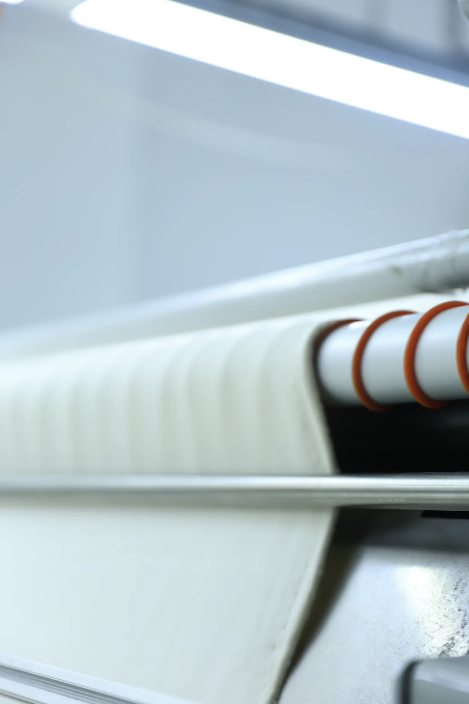
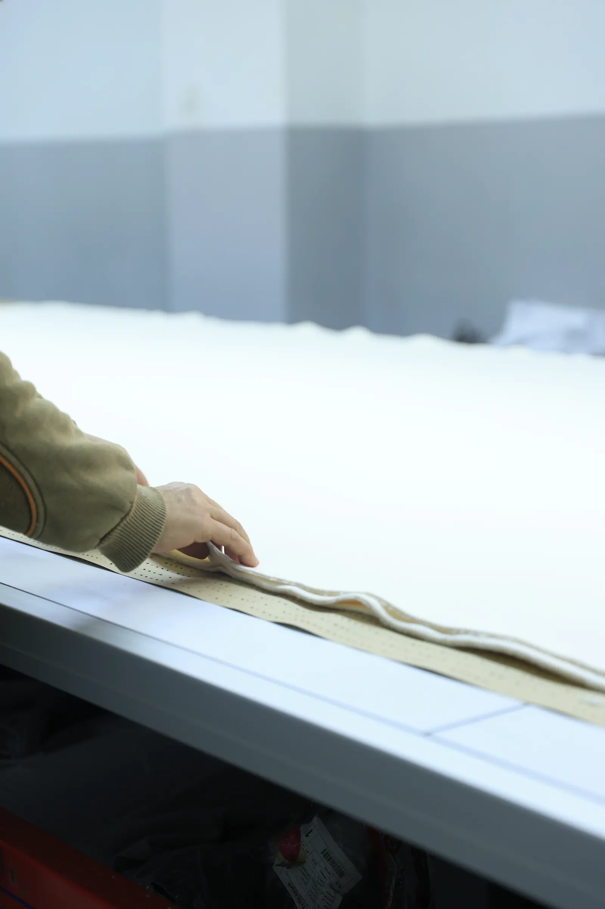
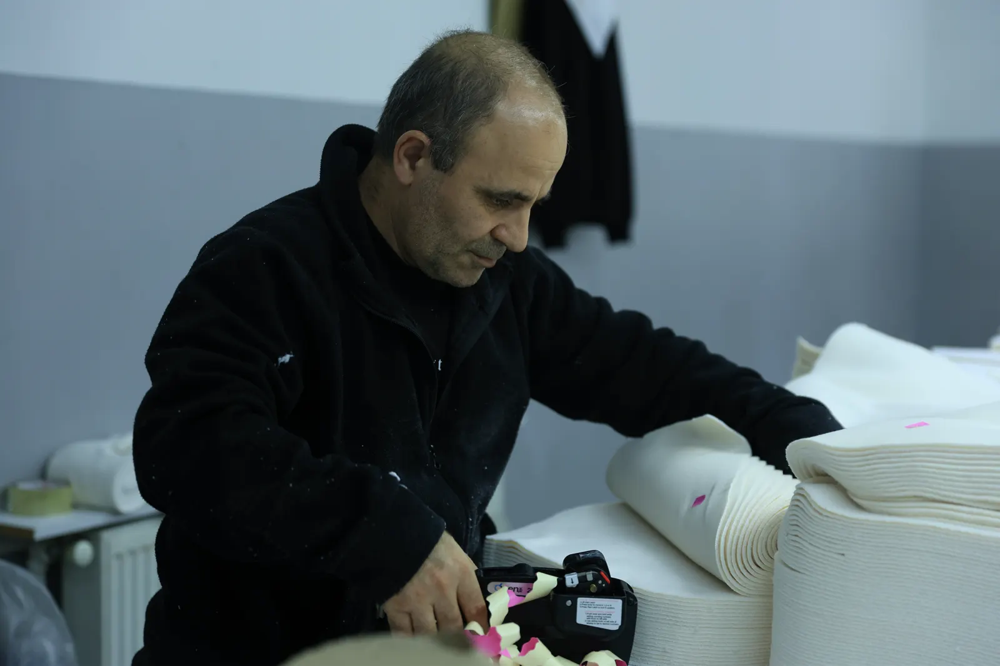

01
Brif ve yorumlama
Tasarımı veya referansı inceler, ürünün ihtiyaç duyduğu kumaşı, kalıbı ve detayları belirleriz.

ÜRETİM
Kendi kumaş üretimimiz; malzeme kararlarını numune, baskı, dikim ve son işlemle birbirine bağlar.
Kumaş, ürünün performansının ve görünümünün temelidir. Onu kendi bünyemizde üretmek, giysiyi ilk günden itibaren malzemesiyle birlikte geliştirmemize yardımcı olur.


Kumaş seçimi, testler, kalıp, kesim, baskı ve son işlem; onaylanan fikrin bitmiş ürüne dönüşmesinde birbirine bağlanır.
MURAT TANDOĞDU · ÜRETİMHer aşama ürünü tekrarlanabilir ve onaylanmış bir sonuca yaklaştırır.
Tasarımı veya referansı inceler, ürünün ihtiyaç duyduğu kumaşı, kalıbı ve detayları belirleriz.
Malzeme geliştirme ve kesim, ilk numunenin fiziksel temelini oluşturur.

Tasarım numuneye dönüşür; brif gerektiriyorsa baskı ve diğer görsel detaylar eklenir.

Kumaş testleri ve numune değerlendirmesi düzeltmelere yön verir. Üretim numunesi son referansı belirler.

Onaylanan ürün, son numune rehberliğinde dikim ve son işlem aşamalarına girer.

Ne yapmak istediğinizi anlatın, doğru geliştirme yolunu birlikte değerlendirelim.